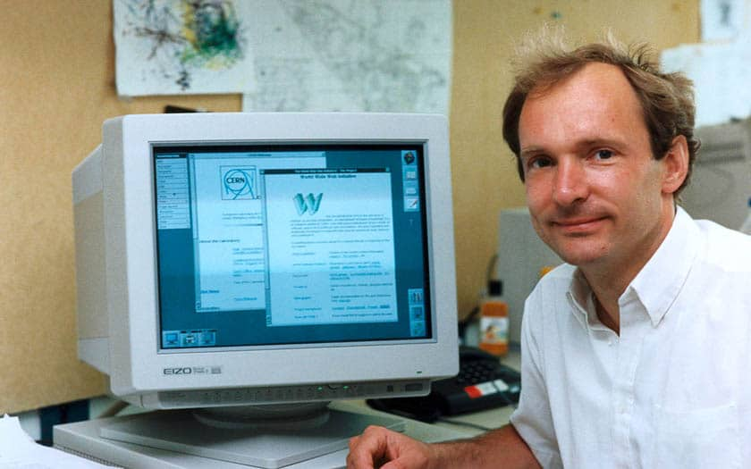

Internet en bref
Avant de parler du Web, il faut peut-être clarifier la différence avec Internet.
Qu’est-ce qu’un réseau informatique ?
- Un réseau informatique est un ensemble d’équipements informatiques (ordinateurs, serveurs…) reliés entre eux de façon à pouvoir échanger des informations. Le switch (commutateur) permet de relier entre eux les appareils d’un même réseau. Il agit comme un aiguillage.
Qu’est-ce que l’Internet ?
- Internet est le réseau informatique mondial accessible au public. Il permet donc de faire communiquer entre eux les réseaux informatiques qui y sont connectés. Internet est donc un réseau de réseaux informatiques.
- Si l’un des ordinateurs du réseau A veut consulter une page Web accessible via le serveur situé sur le réseau B, une communication va devoir s’établir entre le réseau A et le réseau B.
Protocoles et routeurs
- Pour permettre cette communication, plusieurs règles de fonctionnement ont été édictées : les protocoles. Cette communication devra passer par des équipements particuliers qu’on nomme les routeurs.
- Comme on le voit sur le schéma, il n’existe pas de chemin unique pour passer du réseau A au réseau B.
- Une Box fait office à la fois de switch et de routeur.
Remarque : en réalité, votre box n’est pas directement reliée à Internet. Avant le routeur de la box se trouve le modem.
Le Web, un ensemble de documents hypertextes
Le Web est l'une des applications qui utilisent Internet pour transmettre leurs données d'une machine à une autre.
- Le Web est constitué de l'ensemble des documents hypertextes auxquels il donne accès.
- On relie un document à un autre à l'aide d'un lien, permettant de basculer vers un nouveau contenu hypertexte.
Sur Capytale, utilisez le code 8535-6205286 et répondez au QCM.
Historique du Web
A l'époque, en 1989, Tim Berners-Lee travaille au CERN, il est ennuyé par la difficulté de partager des informations...
Il propose alors de créer un projet de partage d'informations basé sur la consultation de documents hypertextes.
Clique ici pour découvrir l'histoire du web en vidéo, et n'oublie pas de répondre aux questions sur la fiche imprimée.
Le fonctionnement d'un site web
Le langage HTML est un langage informatique à la base du fonctionnement de tous les sites web. Quand vous consultez un site avec votre navigateur, l'ordinateur se base sur ce qu'on lui a expliqué en HTML pour savoir ce qu'il doit afficher.
Un navigateur est un programme qui interprète le langage HTML et affiche les pages Web :
HTML (HyperText Markup Language) : Il a été créé en 1991 lors du lancement du Web. Son rôle est de gérer et organiser le contenu. C'est donc en HTML que vous écrirez ce qui doit être affiché sur la page : du texte, des liens, des images…
HTML 5 : C'est la dernière version. De plus en plus répandue, elle fait beaucoup parler d'elle car elle apporte de nombreuses améliorations comme la possibilité d'inclure facilement des vidéos, un meilleur agencement du contenu, de nouvelles fonctionnalités pour les formulaires, etc. C'est cette version que nous allons apprendre.
Clique ici pour découvrir un peu mieux ce langage HTML
Puis ici pour découvrir un peu le langage CSS qui viendra completer le HTML
Le HTML un langage de programmation ?
Le HTML (HyperText Markup Language) n'est pas un langage de programmation. C'est un langage de balisage utilisé pour structurer une page web. Il permet de définir les éléments visibles comme les titres, les paragraphes, les images ou encore les boutons. Cependant, HTML seul ne permet pas d’interactions dynamiques : une fois affichée, la page reste statique.
C’est là qu’intervient JavaScript. JavaScript est un langage de programmation qui ajoute du dynamisme aux pages web. Grâce à lui, une page peut réagir aux actions de l’utilisateur, modifier son contenu sans être rechargée, ou encore créer des animations et des jeux interactifs.
🎮 L'exemple du Snake ci-dessous illustre parfaitement cette différence :
- HTML sert à organiser la page et afficher le jeu.
- CSS permet d'améliorer l'apparence, comme les couleurs et la mise en page.
- JavaScript est responsable de toute la logique du jeu : il détecte quand vous appuyez sur les touches du clavier, fait bouger le serpent, gère les collisions et met à jour le score.
💡 Sans JavaScript, le jeu Snake ne fonctionnerait pas ! Il n’y aurait qu’un simple rectangle statique, sans aucun mouvement.
🎮 À vous de jouer ! Cliquez sur "Lancer la partie" et essayez d’atteindre 10 points pour débloquer le code secret ! 🚀